Code
#importing libraries
library(sf)
library(ggplot2)
library(tidyr)
library(dplyr)
library(gridExtra)
library(vcd)
library(reshape2)The first step of our study is to use the GLRSED dataset, which contains the characteristics of a large number of lakes accross the globe. The goal here is to assess the importance of glacier and permafrost in providing freshwater and to identify the area of the globe that rely more heavily no melting ice for freshwater.
#importing libraries
library(sf)
library(ggplot2)
library(tidyr)
library(dplyr)
library(gridExtra)
library(vcd)
library(reshape2)#importing dataset
GLRSED <- st_read("C:/Users/meuni/Documents/EDAV/final project/GLRSED_GeoPackage_V1.0/GLRSED_GeoPackage_V1.0/GLRSEDV1.gpkg")Reading layer `glrsed_v1' from data source
`C:\Users\meuni\Documents\EDAV\final project\GLRSED_GeoPackage_V1.0\GLRSED_GeoPackage_V1.0\GLRSEDV1.gpkg'
using driver `GPKG'
Simple feature collection with 2171501 features and 22 fields
Geometry type: MULTIPOLYGON
Dimension: XY
Bounding box: xmin: -180 ymin: -55.86514 xmax: 180 ymax: 83.57595
Geodetic CRS: WGS 84# Count the number of lakes based on glacier and permafrost feeding
count_types <- GLRSED %>%
select(Mountain, SWORD, Glacier, Country, Continent, Lake_area)
count_types$Permafrost <- ifelse(GLRSED$Permafrost>0, 1,0)
count_types$Reservoir <- ifelse(GLRSED$Reservoir==1 | GLRSED$GOODD==1, 1, 0)
count_types$Endorheic <- ifelse(GLRSED$Endorheic>0, 1,0)
count_types <- st_drop_geometry(count_types)
long_types <- count_types %>%
pivot_longer(cols = c('Mountain', 'SWORD', 'Glacier', 'Permafrost', 'Reservoir', 'Endorheic'), names_to = "LakeType", values_to = "IsType")
Total<- count_types%>%
select(-Continent)%>%
summarize(Count = n(), TotalArea = sum(Lake_area), .by = c(Country))
summary_by_country <- long_types%>%
summarize(SumLake = n(), SumArea = sum(Lake_area), .by = c(Continent, Country, LakeType, IsType))
summary_by_country <- merge(summary_by_country, Total, by.x = "Country", by.y = "Country", all.x = TRUE, all.y = TRUE)
summary_by_country$percent_nLake <- summary_by_country$SumLake/summary_by_country$Count *100
summary_by_country$percent_area <- summary_by_country$SumArea/summary_by_country$TotalArea *100
summary_by_country <- summary_by_country %>%
filter(IsType != 0)#plotting bar charts
total <- Total%>%summarize(count=sum(Count), area=sum(TotalArea))
#number of lakes of each type
plot_count <- ggplot(summary_by_country, aes(x=LakeType, y=SumLake)) +
geom_col(fill="cornflowerblue")+
geom_line(aes(y=total$count, group=1), linewidth=1.5)+
labs(
title = "Count by Lake Type",
x = "Lake Type",
y = "Count") +
theme_minimal()+
theme(axis.text.x = element_text(angle = 45, hjust = 1))
#area of lakes
plot_area <- ggplot(summary_by_country, aes(x=LakeType, y=SumArea)) +
geom_col(fill="cornflowerblue")+
geom_line(aes(y=total$area, group=1), linewidth=1.5)+
labs(
title = "Area by Lake Type",
x = "Lake Type",
y = "Area") +
theme_minimal()+
theme(axis.text.x = element_text(angle = 45, hjust = 1))
grid.arrange(plot_count, plot_area, ncol=2)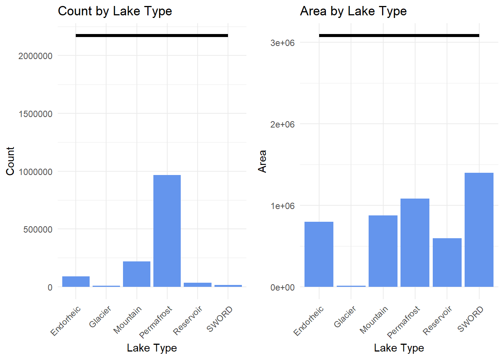
From these first bar charts we can notice a few things:
The rest of our work focuses on lakes created by melting glaciers and permafrost.
vcd::mosaic(Glacier + Permafrost ~ Mountain + SWORD, count_types, direction = c("v", "v", "h", "h"), highlighting_fill= RColorBrewer::brewer.pal(4, "Set3"))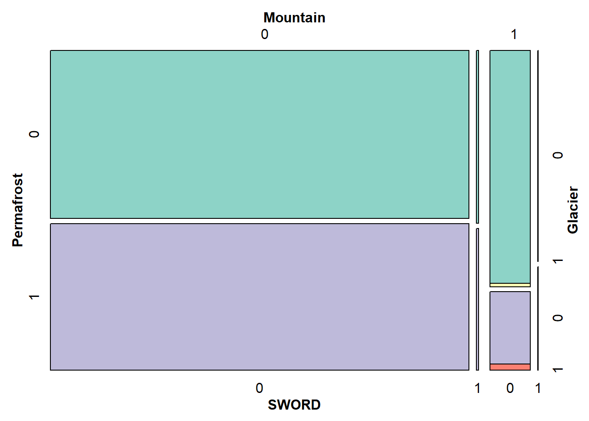
The majority of permafrost and glacier-fed lakes are not located on rivers. In fact, the lakes created by melting glaciers and permafrost are located upstream near the source.
If glacier-fed lakes are all located in mountainous areas, permafrost lakes can also be on plains at low altitudes. Indeed, permafrost exists both at high latitudes and altitudes, the key point being that a cryosol must be permanently frozen, at least for two years, and therefore impermeable.
#area by continents
ggplot(summary_by_country, aes(x=LakeType, y=SumArea)) +
geom_col(fill="cornflowerblue")+
facet_wrap(~Continent)+
labs(
title = "Area by Lake Types by Continent",
x = "Lake Type",
y = "Area") +
theme_minimal()+
theme(
axis.text.x = element_text(angle = 45, hjust = 1)
)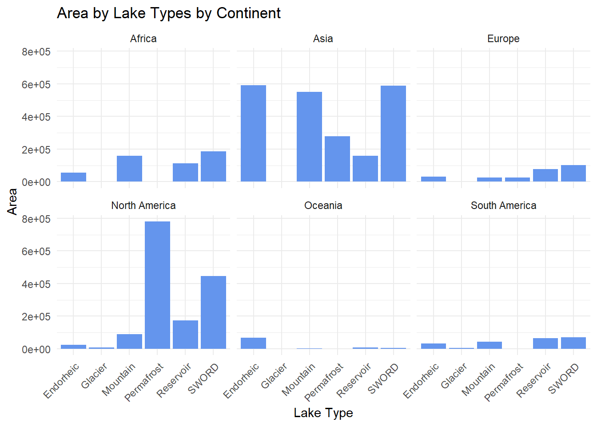
North America and Asia are the continents that rely the most on permafrost and glacier water. Both Canada and Russia have a large part of their territory that is frozen all year long since they are located at high latitudes.
Unsurprinsigly, Africa doesn’t have any glacier and permafrost lakes despite the mountainous regions as the climate doesn’t allow for durable ice. The last glaciers of Mount Kilimanjaro will disappear before 2050 due to global warming.
The following graphs are an attempt to create an indicator to to assess the regions’ dependence on water from glaciers and permafrost. It is based on the proportion of freshwater surface area available from glaciers and permafrost. This is only an approximation, however, and some lakes are counted twice in this indicator, as they are derived from both glacier melt and permafrost. Nevertheless, it gives an idea of the impact that the disappearance of these water sources could have in these regions.
#indicator for ranking countries depending on how much they rely on glacier or permafrost water
countries_indicator <- summary_by_country%>%select(Country)
countries_indicator$percent_nLake<- ifelse(summary_by_country$LakeType=="Glacier"|summary_by_country$LakeType=="Permafrost", summary_by_country$percent_nLake, 0)
countries_indicator$percent_area<- ifelse(summary_by_country$LakeType=="Glacier"|summary_by_country$LakeType=="Permafrost", summary_by_country$percent_area, 0)
countries_indicator<- countries_indicator%>%summarize(Count = n(),percent_nLake = sum(percent_nLake), percent_area=sum(percent_area), .by = Country)
colnames(countries_indicator)[colnames(countries_indicator) == "Country"] <- "country"library(rnaturalearth)
# Télécharger des données géospatiales pour les pays
world <- ne_countries(scale = "medium", returnclass = "sf")
world$name_sort <- toupper(world$name_long)
# Fusionner les données géospatiales avec les données d'indicateurs
partial_match <- function(x, y) {
matching_indices <- sapply(x, function(name) agrep(name, y, ignore.case = TRUE, value = TRUE, max.distance = 0.1))
matching_indices <- lapply(matching_indices, function(matching_index) ifelse(length(matching_index) > 0, matching_index[1], NA))
matching_indices <- unlist(matching_indices)
matching_indices[!is.na(matching_indices)]
}
# Perform partial matching
matching_indices_indic <- partial_match(countries_indicator$country, world$name_long)
matching_indices_world <- partial_match(world$name_long, countries_indicator$country)
# Merge based on matching indices
world_data <- merge(world, countries_indicator, by.x = "name_sort", by.y = "country", all.x = TRUE, all.y = TRUE)
world_data$percent_area[world_data$percent_area > 100] <- 100
# Créer la carte du monde avec ggplot2
ggplot() +
geom_sf(data = world_data, aes(fill = percent_area)) +
scale_fill_gradient2(low = "white", high = "red", na.value = "grey40", name = "Percentage", limits = c(0, 100)) +
theme_minimal() +
ggtitle("World Map with percentage of freshwater lakes surface from glacier and permafrost ")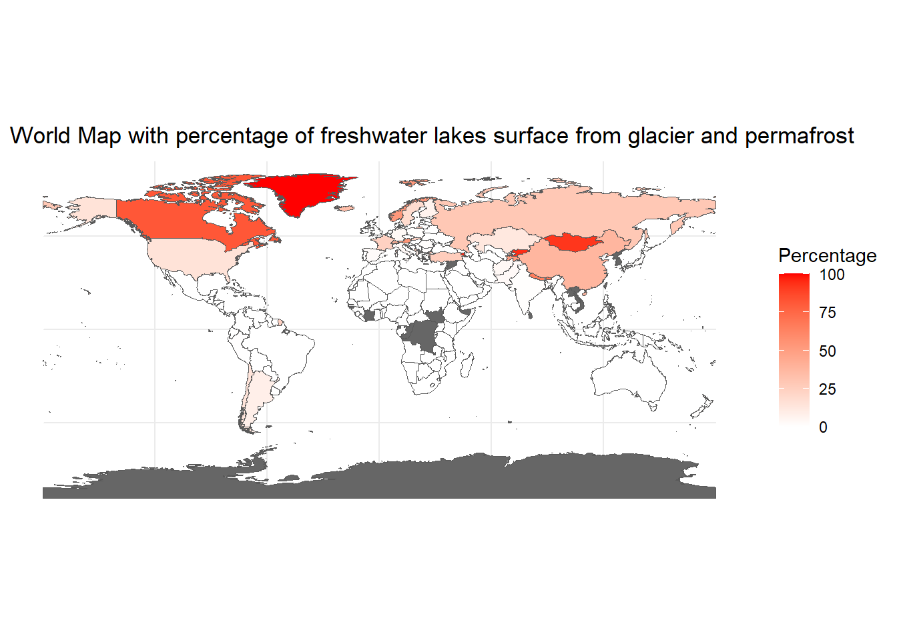
The map above shows which countries rely most heavily on glaciers and permafrost to fill their freshwater lakes. High-latitude countries are heavily dependent on water from melting permafrost and appear in the darker shade of red here. Countries with large mountain ranges have glaciers and permafrost at altitude. They depend on these melting glaciers for their freshwater reserves in summer.
The indicator on proportion of area of freshwater lakes from glacier and permafrost enables us to identify the most and least ice dependent countries.
#List of Ice dependent countries using percentage of area
IceFed = c("SVALBARD AND JAN MAYEN", "GREENLAND", "ANDORRA", "KYRGYZSTAN")
NoIce = c("SOUTH AFRICA", "SUDAN", "ZAMBIA", "TANZANIA")
most_ice_summary <- summary_by_country %>%
filter(Country %in% IceFed)
least_ice_summary <- summary_by_country %>%
filter(Country %in% NoIce)
most <- ggplot(most_ice_summary, aes(x=LakeType, y=percent_area)) +
geom_col()+
facet_wrap(~Country)+
labs(
title = "Most ice dependent countries",
x = "Lake Type",
y = "Percentage of area") +
theme_minimal()+
theme(
axis.text.x = element_text(angle = 45, hjust = 1)
)
least <- ggplot(least_ice_summary, aes(x=LakeType, y=percent_area)) +
geom_col()+
facet_wrap(~Country)+
labs(
title = "Least ice dependent countries",
x = "Lake Type",
y = "Percentage of area") +
theme_minimal()+
theme(
axis.text.x = element_text(angle = 45, hjust = 1)
)
grid.arrange(most, least, ncol=2)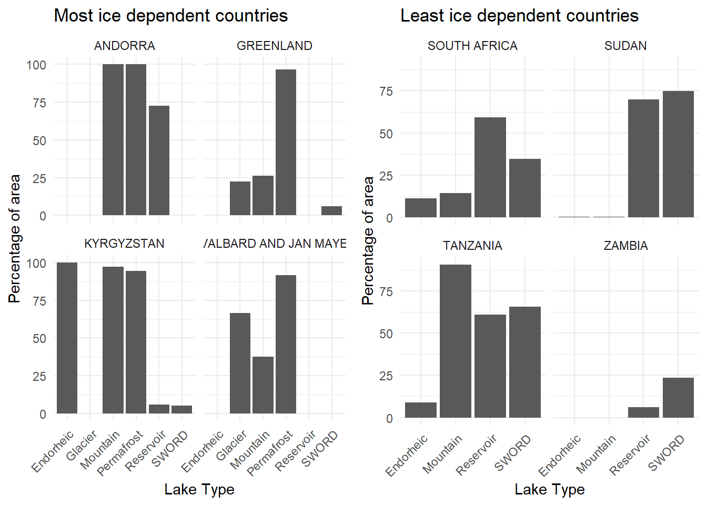
Comparing the different percentage of areas for ice dependent countries enables us to separate them into two categories which have already been briefly mentioned:
Two trends can be noted among the countries that do not depend on ice for their freshwater resources:
In the rest of the work, we will focus on North America and the United States.
# Generate sample data (longitude, latitude, and heat values)
North_America <- count_types
North_America$longitude <- GLRSED$Longitude
North_America$latitude <- GLRSED$Latitude
North_America$Hylak_ID <- GLRSED$Hylak_ID
North_America <- North_America%>%filter(Continent == "North America")
lon_bin_size <- 1
lat_bin_size <- 1
# Summarize the data into 10x10 squares
summarized_North_America <- North_America %>%
mutate(
LonBin = cut(longitude, breaks = seq(-180, 180, lon_bin_size), labels = FALSE),
LatBin = cut(latitude, breaks = seq(-90, 90, lat_bin_size), labels = FALSE)
) %>%
group_by(LonBin, LatBin) %>%
summarize(
Number_of_Lakes = n(),
Total_area = sum(Lake_area),
nMountain = sum(Mountain),
nGlacier = sum(Glacier),
nPermafrost = sum(Permafrost),
Latitude = (min(latitude)%/%lat_bin_size) *lat_bin_size,
Longitude = (min(longitude)%/%lon_bin_size) *lon_bin_size
)
area_score <- North_America %>%
mutate(
LonBin = cut(longitude, breaks = seq(-180, 180, lon_bin_size), labels = FALSE),
LatBin = cut(latitude, breaks = seq(-90, 90, lat_bin_size), labels = FALSE)
) %>%
group_by(LonBin, LatBin, Glacier, Permafrost) %>%
summarize(
Lake_area = sum(Lake_area)
)%>%
filter(Glacier==1 | Permafrost==1)
summarized_North_America <- merge(summarized_North_America, area_score, by = c("LonBin", "LatBin"), all.x = TRUE, all.y = TRUE)
summarized_North_America[is.na(summarized_North_America)] <- 0
summarized_North_America$score <-summarized_North_America$Lake_area/summarized_North_America$Total_area *100ggplot(summarized_North_America, aes(x = Longitude, y = Latitude, fill = score)) +
geom_tile() +
scale_fill_gradient(low = "white", high = "red") +
borders("world", regions = c("USA", "Canada", "Greenland", "Mexico","Belize","Costa Rica", "Cuba", "Dominican Republic", "El Salvador", "Guatemala", "Haiti", "Honduras", "Jamaica","Martinique", "Nicaragua", "NORTHERN MARIANA ISLANDS", "Panama", "Puerto Rico", "Trinidad and Tobago"), color = "black") +
borders("state", color = "black", size = 0.5)+
coord_fixed(1.3, xlim = c(-180, 0), ylim = c(0, 90))+
theme_minimal()+
theme(panel.background = element_rect(fill = "lightblue"))+
ggtitle("Dependence on Glacier and Permafrost water accross North America")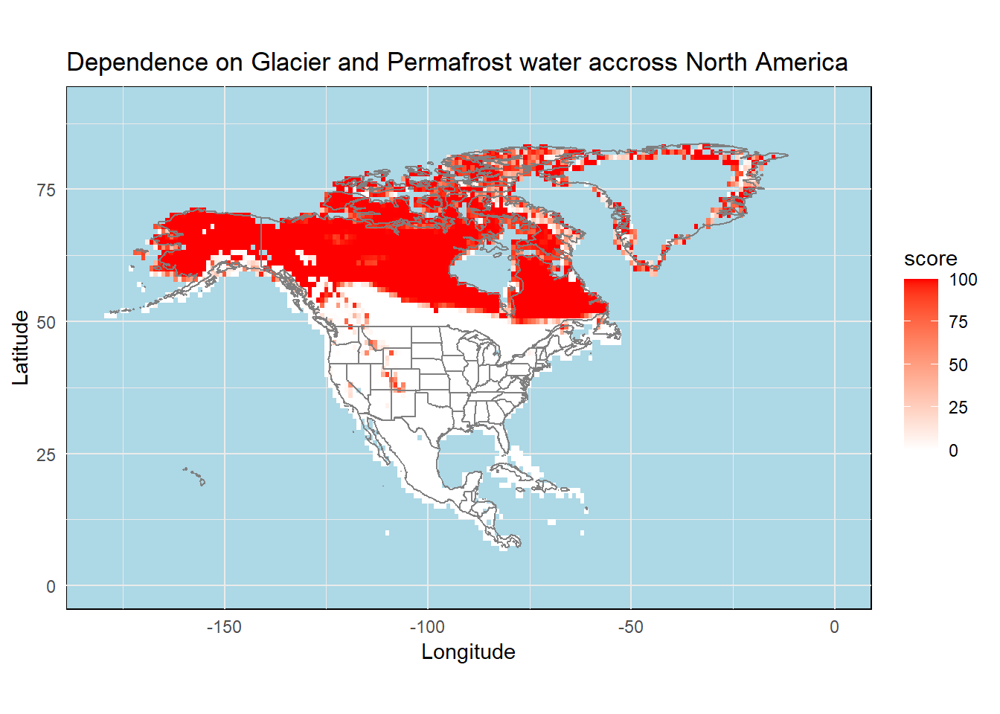
The center of Greenland appears in light blue as we don’t have any lake data for it. It could either because the lakes were not registered in the dataset or because there is no lake. As expected with the categories mentioned above, the larger part of Canada and Alaska heavily rely on permafrost water. High latitudes allow for frozen land all year round. They are high latitude category identified previously.
In the US, the rocky mountains show up as a red trail. The glaciers in high altitude in the mountains provide water for the area. They are part of the high altitude category identified before.
In this part, we are now using the RealSAT dataset which contains the monthly surface variations of lakes between 1985 and 2020. The goal here is to try to identify a trend for glacier-fed lakes over that period of time.
The code to extract the timeseries from the RealSAT dataset is inspired by the paper ReaLSAT, a global dataset of reservoir and lake surface area variations by Ankush Khandelwal, Anuj Karpatne, Zhihao Wei, Rahul Ghosh, Hilary Dugan, Paul Hanson and Vipin Kumar.
#code from ReaLSAT, a global dataset of reservoir and lake surface area variations Creators Ankush Khandelwal ORCID Anuj Karpatne Zhihao Wei Rahul Ghosh Hilary Dugan Paul Hanson Vipin Kumar
# Check if the average missing percentage before and after any given timestep is more than the threshold
prune_time_steps <- function(fill_ts, window_size) {
T <- length(fill_ts)
prn_ts <- rep(FALSE, T)
for (j in 2:(T - 1)) {
cur_ts_before <- fill_ts[max(1, j - window_size):j]
cur_ts_after <- fill_ts[(j + 1):min(j + window_size + 1, T)]
if(mean(cur_ts_before)>90 | mean(cur_ts_after)>90){prn_ts[j] <- TRUE}
}
if(fill_ts[1]>90){
prn_ts[1] <- TRUE
}
if(fill_ts[T-1]>90){
prn_ts[T-1] <- TRUE
}
return(prn_ts)
}
make_dataframe <- function(glacier_id, start_year=1984, end_year=2020) {
dyear <- rep(seq(1984, 2020), each = 12)
dyear <-dyear[1:442]
dmonth <- rep(0:11, times = 37)
dmonth <- dmonth[1:442]
# Plotting
area_ts <- as.numeric(glacier_id[3, ]) * 0.0009 # area timeseries in terms of number of pixels
fill_ts <- as.numeric(glacier_id[1, ]) # percentage of missing glacier_800090 in each month
area_ts_gsw <- as.numeric(glacier_id[4, ]) * 0.0009
# Extracting timesteps where area values were potentially affected by a large amount of missing data around them.
bad_ts <- prune_time_steps(fill_ts, 3)
area_ts[bad_ts] <- NA # assigning NA values to the missing timesteps
area_ts_gsw[bad_ts] <- NA # assigning NA values to the missing timesteps
# Plotting
df <- data.frame(Column1=dyear, Column2=area_ts, Column3=area_ts_gsw, Column4=dmonth)%>%filter(Column1>start_year & Column1<end_year)
return(df)
}realSAT_US <-st_read("C:/Users/meuni/Documents/EDAV/final project/realsat/ReaLSAT-2-0/ReaLSAT.shp")%>%filter(CONTINENT==2)Reading layer `ReaLSAT' from data source
`C:\Users\meuni\Documents\EDAV\final project\realsat\ReaLSAT-2-0\ReaLSAT.shp'
using driver `ESRI Shapefile'
Simple feature collection with 681137 features and 14 fields
Geometry type: MULTIPOLYGON
Dimension: XY
Bounding box: xmin: -176.8504 ymin: -55.88186 xmax: 178.7361 ymax: 51.8578
Geodetic CRS: WGS 84US <- North_America%>%filter(Country=="UNITED STATES" & !Hylak_ID=='NA')
US <- merge(US, realSAT_US, by.x="Hylak_ID", by.y="Hylak_id", all.x=TRUE)
US <- US%>%filter(!ID=='NA')glacier_712529 <- read.csv("C:/Users/meuni/Documents/EDAV/final project/ReaLSAT/monthly_timeseries/monthly_timeseries_-120_40/ID_712529.csv")
glacier_712529 <- make_dataframe(glacier_712529)
glacier_677013 <- read.csv("C:/Users/meuni/Documents/EDAV/final project/ReaLSAT/monthly_timeseries/monthly_timeseries_-110_40/ID_677013.csv")
glacier_677013 <- make_dataframe(glacier_677013)
glacier_676761 <- read.csv("C:/Users/meuni/Documents/EDAV/final project/ReaLSAT/monthly_timeseries/monthly_timeseries_-120_40/ID_676761.csv")
glacier_676761 <- make_dataframe(glacier_676761)
glacier_671117 <- read.csv("C:/Users/meuni/Documents/EDAV/final project/ReaLSAT/monthly_timeseries/monthly_timeseries_-110_40/ID_671117.csv")
glacier_671117 <- make_dataframe(glacier_671117)
glacier_733649 <- read.csv("C:/Users/meuni/Documents/EDAV/final project/ReaLSAT/monthly_timeseries/monthly_timeseries_-120_30/ID_733649.csv")
glacier_733649 <- make_dataframe(glacier_733649)
glacier_711481 <- read.csv("C:/Users/meuni/Documents/EDAV/final project/ReaLSAT/monthly_timeseries/monthly_timeseries_-110_40/ID_711481.csv")
glacier_711481 <- make_dataframe(glacier_711481)
US_glacier_timeseries <- data.frame(matrix(nrow = 420, ncol = 0))
US_glacier_timeseries$year <- glacier_712529$Column1
US_glacier_timeseries$month <- glacier_712529$Column4
US_glacier_timeseries$glacier_712529 <- glacier_712529$Column2
US_glacier_timeseries$glacier_677013 <- glacier_677013$Column2
US_glacier_timeseries$glacier_676761 <- glacier_676761$Column2
US_glacier_timeseries$glacier_671117 <- glacier_671117$Column2
US_glacier_timeseries$glacier_733649 <- glacier_733649$Column2
US_glacier_timeseries$glacier_711481 <- glacier_711481$Column2
US_glacier_timeseries$month_code <- month.abb[US_glacier_timeseries$month + 1]
US_glacier_timeseries$month_code <- factor(US_glacier_timeseries$month_code, levels = month.abb)We selected 6 lakes among the glacier-fed lakes in the US to study their variations in surface over the 35-year span and their average seasonal surface variations. The sample chosen contains lakes from different sizes and locations accross the Rocky Mountains. A bias in this sample cannot be ruled out, as we did not focus on obtaining a representative random sample. The observations made here only serve to develop an intuition about glacial lakes in the USA. The plots and the tendency line - using loess method - are influenced by missing values. For some lakes, surface was only measured during the spring and summer. A few years are also missing.
melted_data <- melt(US_glacier_timeseries, id.vars = c("year", "month_code", "month"), variable.name = "lake")
# Create a faceted line plot
ggplot(melted_data, aes(x = year, y = value, group = lake, color = month_code)) +
geom_point() +
geom_smooth()+
facet_wrap(~lake, scales = "free_y") +
labs(title = "Variations of Lake Surface Over the Years",
x = "Year",
y = "Surface sq.kms") +
theme_minimal()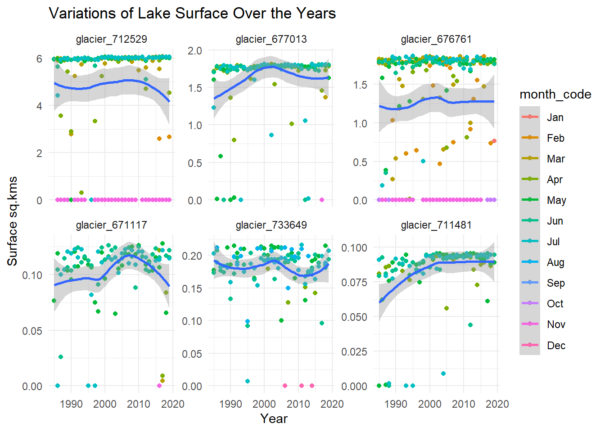
Among the six glacier-fed lakes selected:
The glacier-fed lake with id 711481 seems to have been growing in size from 1985 to 2000. This could be due to increased melting of the glacier, releasing more water than before.
Overall, we cannot conclude that there has been a significant reduction in surface area of these glacier-fed lakes. But that’s not to say that the gradual disappearance of glaciers doesn’t pose a threat to these lakes and the water supply they provide. Indeed, in recent years, glaciers have continued to melt in summer at a rate similar to or even greater than in previous decades, allowing the lakes downstream to fill up. However, winter snowfalls are no longer sufficient to compensate for summer melting, putting glaciers - the majority of which are set to disappear by 2050 - and their associated lakes at risk in the long term.
ggplot(melted_data, aes(x = month_code, y = value, group = lake, color = year)) +
geom_point() +
geom_smooth()+
facet_wrap(~lake, scales = "free_y") +
labs(title = "Seasonal Variations of Lake Surface",
x = "Month",
y = "Surface sq.kms") +
theme_minimal()+
theme(
axis.text.x = element_text(angle = 45, hjust = 1)
)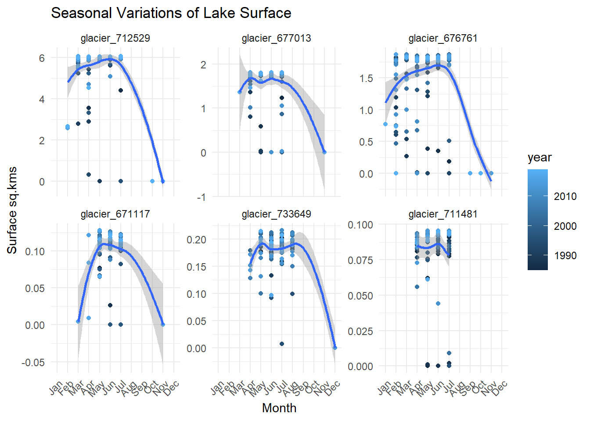
Despite the missing data for the winter months in some plots, a clear tendency can be highlighted for the seasonal variations of glacier-fed lake surface: the surface increases during the summer months and decreases during the winter. The explanation for this phenomenon is simple: glaciers and winter snow melt during the summer, filling downstream lakes and swelling torrents. During the winter, low temperatures prevent the glaciers from melting, so they don’t release any fresh water.
To better understand the specificity of glacier-fed lakes, we will briefly look at the variations of surface from 1985 to 2020 and the monthly variations of lakes that are not glacier-fed.
The remark made at the previous paragraph is still valid for sampling method here. The data was formatted using the same code as before and saved in .csv.
US_lake_timeseries <- read.csv("C:/Users/meuni/Documents/EDAV/final project/ReaLSAT/monthly_timeseries/US_lake_timeseries.csv")%>%select(!lake_676761)
US_lake_timeseries$month_code <- factor(US_lake_timeseries$month_code, levels = month.abb)
melted_data_lake <- melt(US_lake_timeseries, id.vars = c("year", "month_code", "month"), variable.name = "lake")
# Create a faceted line plot
ggplot(melted_data_lake, aes(x = year, y = value, group = lake, color = month_code)) +
geom_point(na.rm=TRUE) +
geom_smooth()+
facet_wrap(~lake, scales = "free_y") +
labs(title = "Variations of Lake Surface Over the Years",
x = "Year",
y = "Surface sq.kms") +
theme_minimal()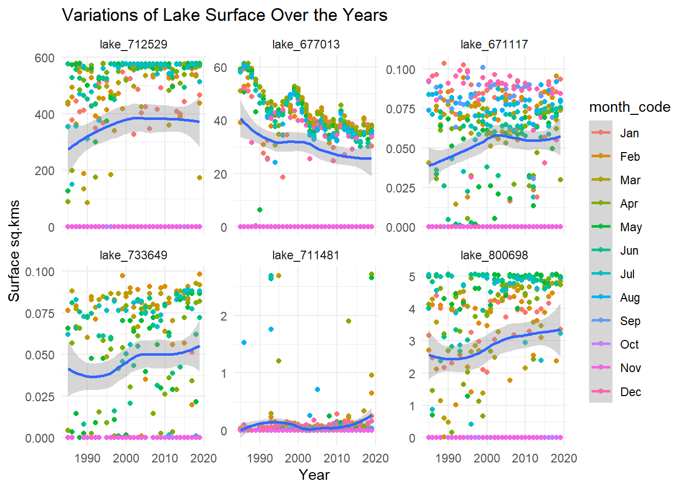
Four of these lakes have had their surface increase from 1985. As they are from different parts of the US it is difficult to provide a single explanation for this phenomenon. Later in this work we will explore the correlation with temperature, precipitation and snowfall to try to find an explanation for these variations for lakes around Boulder, CO.
ggplot(melted_data_lake, aes(x = month_code, y = value, group = lake, color = year)) +
geom_point() +
geom_smooth()+
facet_wrap(~lake, scales = "free_y") +
labs(title = "Seasonal Variations of Lake Surface",
x = "Month",
y = "Surface sq.kms") +
theme_minimal()+
theme(
axis.text.x = element_text(angle = 45, hjust = 1)
)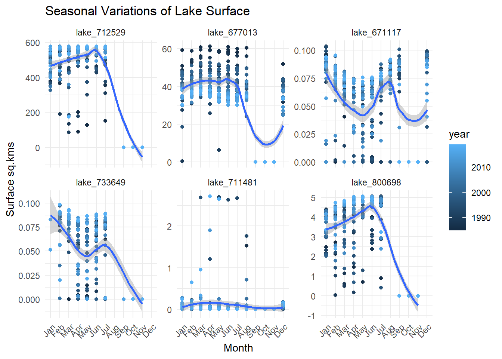
Missing data makes this plot harder to interpret as it causes the large surface decrease in autumn in many of the plots.
For the most part, no clear seasonal tendency appears:
We can thus see that the trends highlighted in the previous paragraph are specific to glacier-fed lakes.
This paragraph is an attempt to look at the correlation between precipitations, snowfalls, temperature and surface variations of lakes near Boulder, Colorado. The precipitation, temperature and snowfall monthly records are provided by the Colorado Climate Center from Colorado State University. The data we use is collected at the Boulder weather station from January 1984 to December 2022.
boulder_weather <- read.csv("C:/Users/meuni/Documents/EDAV/final project/Boulder_weather_data.csv")
boulder_glacier <- read.csv("C:/Users/meuni/Documents/EDAV/final project/realsat/monthly_timeseries/US_glacierBoulder_timeseries.csv")
boulder_lake <- read.csv("C:/Users/meuni/Documents/EDAV/final project/realsat/monthly_timeseries/US_lakeBoulder_timeseries.csv")
boulder_glacier$month_code <- factor(boulder_glacier$month_code, levels = month.abb)
boulder_average_monthly <- boulder_glacier%>%
summarize(maxTemp=mean(maxTemp, na.rm=TRUE), minTemp=mean(minTemp, na.rm=TRUE), precip=mean(precip, na.rm=TRUE), snowfall=mean(snowfall, na.rm=TRUE), .by=month_code)
boulder_average_year <- boulder_glacier%>%
summarize(maxTemp=max(maxTemp, na.rm=TRUE), minTemp=min(minTemp, na.rm=TRUE), precip=sum(precip, na.rm=TRUE), snowfall=sum(snowfall, na.rm=TRUE), .by=year)
year <- ggplot(boulder_average_year, aes(x=year))+
geom_line(aes(y=maxTemp), color="red")+
geom_line(aes(y=minTemp), color="blue")+
geom_col(aes(y=precip/10), fill="lightblue")+
geom_col(aes(y=snowfall/10), color="black", fill=NA)+
scale_y_continuous(
name = "Temperature (°F)",
sec.axis = sec_axis(~.*10, name = "Precipitation (mm)")
) +
theme_minimal()
month <- ggplot(boulder_average_monthly, aes(x=month_code))+
geom_line(aes(y=maxTemp), group=1, color="red")+
geom_line(aes(y=minTemp), group=1, color="blue")+
geom_col(aes(y=precip), fill="lightblue")+
geom_col(aes(y=snowfall), color="black", fill=NA)+
scale_y_continuous(
name = "Temperature (°F)",
sec.axis = sec_axis(~., name = "Precipitation (mm)")
)+
labs(title = "Temperature, Precipitation and Snowfall in Boulder, CO")+
theme_minimal()
grid.arrange(month, year, ncol=2)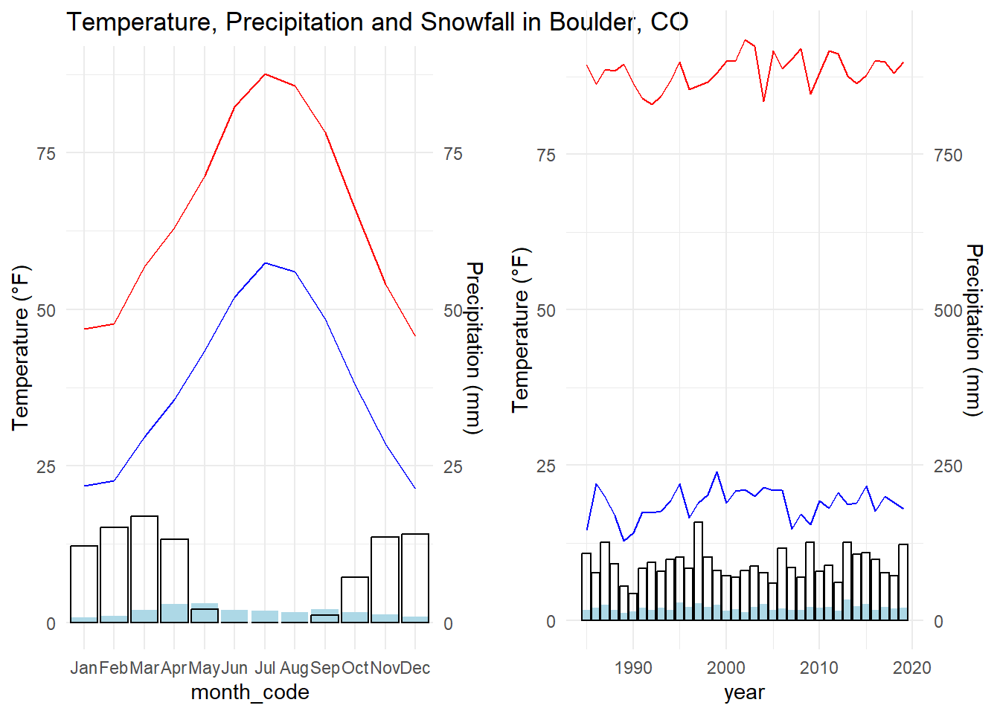
The seasonal weather in Boulder, CO in brief:
Since 1984:
boulder_2010_2015 <- boulder_glacier%>%
select(year, month_code, maxTemp, minTemp, precip, snowfall, glacier_671117, date)
boulder_2010_2015$lake_719135 <- boulder_lake$lake_719135
boulder_2010_2015<- boulder_2010_2015%>%filter(year>2010 & year<2015)
boulder_2010_2015$date <- as.Date(paste(boulder_2010_2015$date, "01", sep = "-"))
melted_data_boulder <- melt(boulder_2010_2015, id.vars = c("year", "date", "month_code", "minTemp", "maxTemp", "precip", "snowfall"), variable.name = "lake")
# Create a faceted line plot
ggplot(melted_data_boulder, aes(x = date, y = value, group = lake, color = month_code)) +
geom_point(na.rm=TRUE) +
geom_smooth(span=0.3, color="black")+
geom_line(aes(y=maxTemp/400), group=1, color="red")+
geom_line(aes(y=minTemp/400), group=1, color="blue")+
scale_y_continuous(
name = "Area sq.kms",
sec.axis = sec_axis(~.*400, name = "Temperature (°F)")
)+
facet_wrap(~lake, scales = "free_y")+
theme_minimal()+
scale_x_date(
breaks = scales::breaks_width("1 year"),
date_labels = "%Y"
)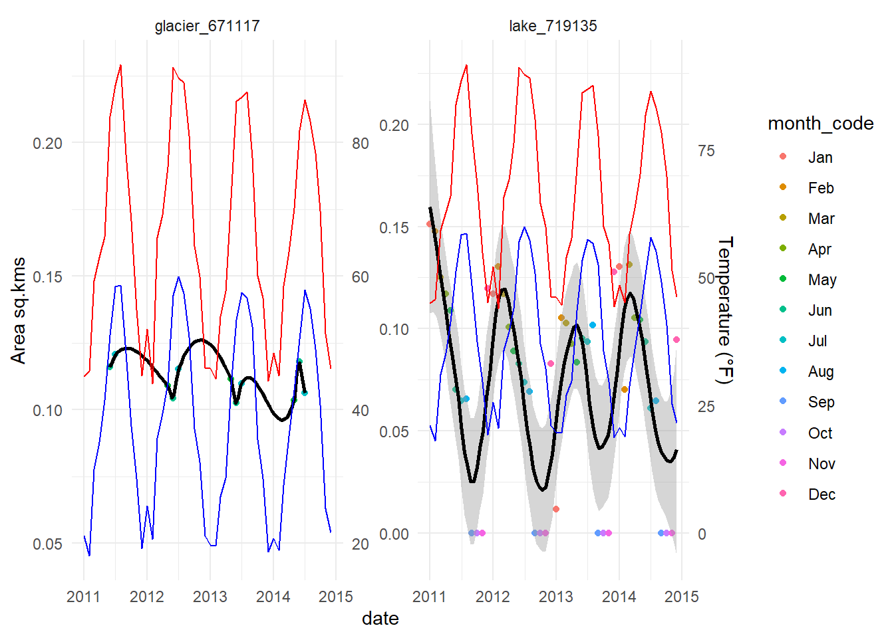
This graph compares the variations of surface of a glacier-fed lake and glacier-unrelated lake from the Boulder area between 2011 and 2015. In red and blue, the max and min temperature are respectively displayed.
In the case of the glacier lake, an increase in temperature is correlated with an increase in surface of the lake: when the temperature increases the glacier starts melting and therefore providing freshwater to the lake downstream.
In the case of the other lake, it seems like high temperature are lows regarding surface lakes. Here it might be due to evaporation of water from the lake.
# Create a faceted line plot
ggplot(melted_data_boulder, aes(x = date, y = value, group = lake, color = month_code)) +
geom_point(na.rm=TRUE) +
geom_smooth(span=0.3, color="black")+
geom_col(aes(y=precip/100),color="lightblue", fill = "lightblue", alpha=0.5)+
geom_col(aes(y=snowfall/100), color="black", fill=NA)+
scale_y_continuous(
name = "Area sq.kms",
sec.axis = sec_axis(~.*400, name = "Precipiation (mm)")
)+
facet_wrap(~lake, scales = "free_y")+
theme_minimal()+
scale_x_date(
breaks = scales::breaks_width("1 year"),
date_labels = "%Y"
)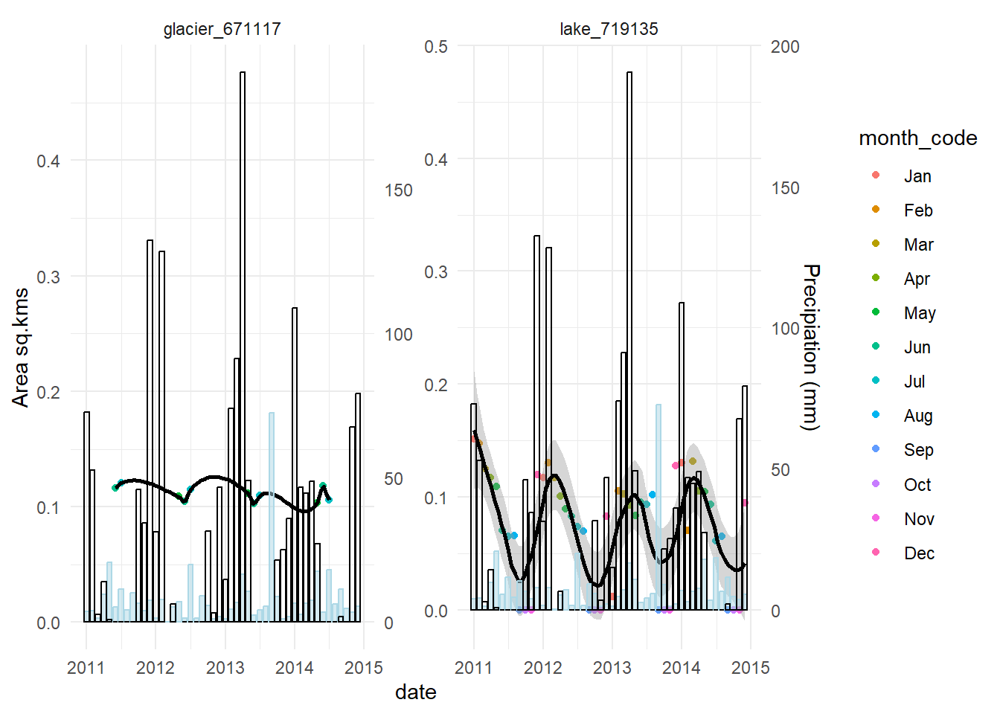
This graph compares the variations of surface of a glacier-fed lake and glacier-unrelated lake from the Boulder area between 2011 and 2015. In white and light blue, the snowfall and precipitation are respectively displayed.
In the case of the glacier lake, precipitation and snowfall don’t seem have an impact on the surface of the lake. During the winter, snowfalls don’t impact the surface of the lake as it may be frozen. During the summer, the glacier consistently provides fresh water to the lake making it less dependent on rainfall.
In the case of the other lake, it seems like important snowfalls and precipitations are correlated to an increase in surface. This seems logical: this lake is partly filled by rainfall or snowfall.